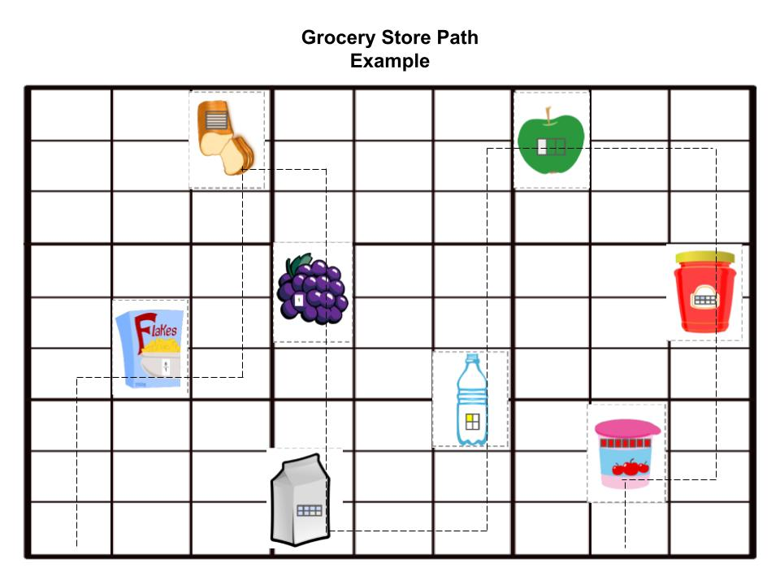

Extend Yourself - Dash: Grocery Delivery
 Add Loops
Add Loops
You can use shortcuts to avoid coding the same set of commands over and over. Instead, you can write a “mini-program” and tell the main program to run them over and over. One kind of shortcut is a loop. It can run as many times as you ask it to. For example, to run a loop 3 times, you can use the code block REPEAT 3 and then list the mini-program steps. Code a command like END LOOP to show where the robot should move on to the next command.
Review your work; see where you can program a loop to create a shorter program.
Add Conditional Statements
Conditional Statements tell a robot to check whether a condition is true or false or equal to a certain amount. The robot can get that information from its sensors. Conditional statements usually include words like “IF”, “UNTIL,” or “WHILE.” For example, to tell a lawn-mowing robot to turn around when it reaches the fence, you could write, “IF the fence is in front of you, THEN reverse direction.”
Think about the obstacles that might be present in the grocery store. When is it appropriate to use a conditional statement? Your Dash Robot has a proximity sensor that tells it when an object is in front of it. Use conditional statements to tell Dash what to do if he has an object in front of him. Test it out!
Add an Accessory
If you have the bulldozer accessory, add this to Dash. See if you can place small objects where your grocery items would be (like ping pong balls or small toys) and see if Dash can collect all of the items into the bulldozer. What if there are too many items for Dash to hold in his bulldozer? What can you do?
Order Your Fractions
Rearrange your Fraction Grocery Cards on your floor model. Program Dash to travel to each item from least to greatest based on the fraction value displayed. How did Dash’s travel pattern differ from the previous travel pattern? How did you decide on the order to put the fractions?

Create a Word Problem
Create a word problem that focuses on comparing fractions with different denominators. Create a fraction grocery card that answers your word problem. Add the fraction grocery card to your floor model. Program Dash to travel to your fraction grocery card. What process did you use to create your word problem? How did you find the answer to your word problem?